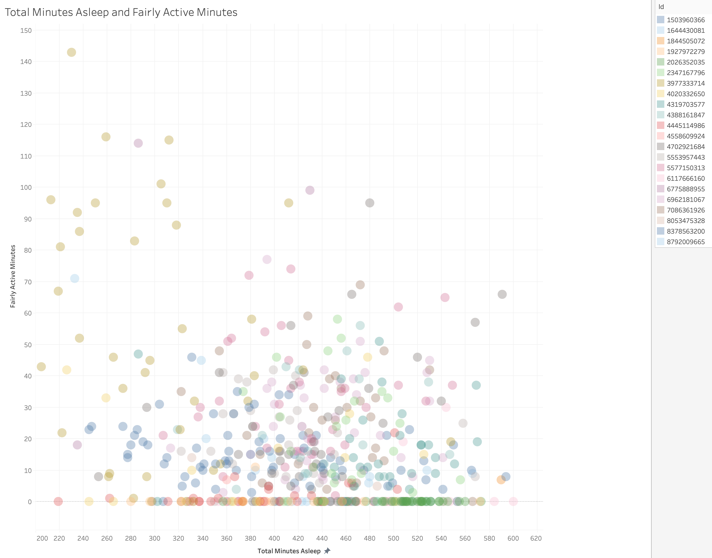

Welcome to my Google Data Analytics capstone project. In this case study, I will perform many real-world tasks of a junior data analyst. The scenario is I am working for Bellabeat, a high-tech manufacturer of health-focused products. Urška Sršen and Sando Mur founded Bellabeat with the motive of enhancing women's health through technology. Their products collect data on the user's activity, sleep, stress, and reproductive health, which has empowered women globally with knowledge about their health and habits. In order to answer the key business questions, I'll follow the steps of the data analysis process from the Google Data Analytics course: ask, prepare, process, analyze, share, and act. This webpage is a full presentation of my process and analysis to the Bellabeat executive team and contains recommendations for Bellabeats marketing strategy.
Business Task: I will analyze smart device fitness data (from Fitbit, used as a proxy for Bellabeat products) to identify trends in how consumers use smart devices to track their health and wellness. The goal is to uncover insights that can inform Bellabeat’s marketing strategy and strengthen its position in the smart wellness market.
Stakeholders: Urška Sršen (Cofounder & Chief Creative Officer), Sando Mur (Cofounder), the Bellabeat executive team, and the Bellabeat marketing analytics department. These groups will use my insights to guide business decisions in the competitive smart device market.
I'll address the three key business questions provided:
Data Source: Public Fitbit Fitness Tracker Dataset. The data comes from Kaggle and it has over 180k downloads and nearly one million views as of September 2025.
About the Data: The dataset comes from 30 Fitbit users who were recruited through Amazon Mechanical Turk between March and May 2016, and they shared their device data (steps, heart rate, sleep, etc.) for the survey. Individual reports can be parsed by export session ID (column A) or timestamp (column B). Variation between output represents use of different types of Fitbit trackers and individual tracking behaviors / preferences.
Contents: In the zip file contains raw data that's stored in two folders separated by month; the first month (3.12.16-4.11-16) contains 11 CSV files, the final month (4.12.16-5.12-16) contains 18 CSV files for a total of 29 CSV files. Most of the data is stored in long format, with three exceptions in wide format. The table below summarizes the contents of the Kaggle dataset and indicates whether each file should be merged across months or retained as a single-month dataset.
| Dataset | Data Description | Processing Step | Availability Window |
|---|---|---|---|
| Merge (11) — combine month ranges | |||
| dailyActivity_merged.csv | Daily totals for steps, distance, and calories burned | Merge · Mar–May | Mar–May (both months) |
| heartrate_seconds_merged.csv | Heart rate readings recorded at the second level | Merge · Mar–May | Mar–May (both months) |
| hourlyCalories_merged.csv | Calories burned, aggregated by hour | Merge · Mar–May | Mar–May (both months) |
| hourlyIntensities_merged.csv | Intensity of activity (low, moderate, high) by hour | Merge · Mar–May | Mar–May (both months) |
| hourlySteps_merged.csv | Total steps taken per hour | Merge · Mar–May | Mar–May (both months) |
| minuteCaloriesNarrow_merged.csv | Calories burned per minute (narrow format) | Merge · Mar–May | Mar–May (both months) |
| minuteIntensitiesNarrow_merged.csv | Activity intensity per minute (narrow format) | Merge · Mar–May | Mar–May (both months) |
| minuteMETsNarrow_merged.csv | Metabolic equivalent (MET) values recorded per minute | Merge · Mar–May | Mar–May (both months) |
| minuteSleep_merged.csv | Minute-by-minute sleep logs (asleep, restless, awake) | Merge · Mar–May | Mar–May (both months) |
| minuteStepsNarrow_merged.csv | Steps recorded per minute (narrow format) | Merge · Mar–May | Mar–May (both months) |
| weightLogInfo_merged.csv | Logged weight, BMI, and timestamps for each entry | Merge · Mar–May | Mar–May (both months) |
| Keep (7) — single-month datasets | |||
| dailyCalories_merged.csv | Daily total calories burned | Keep · Apr–May | Apr–May only |
| dailyIntensities_merged.csv | Daily average activity intensity levels | Keep · Apr–May | Apr–May only |
| dailySteps_merged.csv | Total steps per day | Keep · Apr–May | Apr–May only |
| minuteCaloriesWide_merged.csv | Minute-level calorie data (wide format) | Keep · Apr–May | Apr–May only |
| minuteIntensitiesWide_merged.csv | Minute-level activity intensity (wide format) | Keep · Apr–May | Apr–May only |
| minuteStepsWide_merged.csv | Minute-level step counts (wide format) | Keep · Apr–May | Apr–May only |
| sleepDay_merged.csv | Daily sleep totals (minutes asleep and in bed) | Keep · Apr–May | Apr–May only |
Credibility: Original Fitbit device logs from 30 MTurk participants (2016); comprehensive for activity/sleep/HR but small, older sample; cited on Kaggle under CC0.
Licensing, Privacy, Security, Accessibility: CC0 1.0 Universal (public domain) permits reuse.
Problems & Limitations: A few limitations occur in the data. To begin with, the 30 user sample size is limited and user ID doesn't reveal demographics of each sample which means sampling bias is introduced. We know the users are online survey participants from Mechanical Turk, which may bias toward a specific niche of people. Another limitation is the relatively short time frame of two months, which may not enough time to detect long term health patterns. The last limitation I'll note is the outdated nature of this data. The data is from 2016 which is basically a decade ago from now and the market and user behavior may have shifted.
Merging CSVs
Added "01_" to beginning of first month file names, and "02_" for the second month. I did this for simplicity and to distinguish file when merging them in the next step. Now that the raw CSVs were ready to be skimmed and merged, I created a new project in R and wrote the following in an R file:
library(tidyverse)
# Merging Files
# 1. Daily Activity
daily_activity_01 <- read.csv("01_dailyActivity_merged.csv", stringsAsFactors = FALSE)
daily_activity_02 <- read.csv("02_dailyActivity_merged.csv", stringsAsFactors = FALSE)
daily_activity <- bind_rows(daily_activity_01, daily_activity_02)
write.csv(daily_activity, "dailyActivity_merged.csv", row.names = FALSE)
This process was repeated for the remaining 10 files to merge.
I added stringsAsFactors = FASLE to avoid automatic string conversions. I combined them vertically with bind_rows() from the tidyverse library, and then saved the new CSV with row.names = FALSE to avoid the extra column of row numbers. After reviewing all eleven core CSV files, I identified seven that were most relevant to my project’s analytical goals and therefore selected them for the cleaning process. These files contained the key activity, sleep, and health tracking data needed to answer my research questions.
| File | What It Shows | Cleaned File Name |
|---|---|---|
dailyActivity_merged.csv |
Provides daily summary metrics such as total steps, distance, calories burned, and active vs. sedentary minutes. This file drives most of the key insights about user activity and wellness habits. | daily_activity_clean.csv |
hourlySteps_merged.csv |
Reveals time-of-day activity patterns, helping identify when users are most active. Useful for understanding engagement times and daily routines. | hourly_steps_clean.csv |
hourlyCalories_merged.csv |
Tracks hourly calorie expenditure, allowing comparison with step activity to detect peaks in energy burn throughout the day. | hourly_calories_clean.csv |
hourlyIntensities_merged.csv |
Captures hourly intensity levels (light, moderate, and very active minutes). Supports a deeper look at workout effort and overall movement quality. | hourly_intensities_clean.csv |
minuteSleep_merged.csv |
Provides minute-by-minute sleep tracking data, helping identify average sleep duration, bedtime patterns, and how rest may relate to next-day activity. | minute_sleep_clean.csv |
weightLogInfo_merged.csv |
Shows how frequently users log their weight and BMI. Useful for gauging engagement with health tracking features, though many users leave optional fields like body fat blank (kept intentionally to reflect real-world behavior). | weight_log_info_clean.csv |
minuteStepsNarrow_merged.csv |
Offers fine-grained step tracking at the minute level, allowing detailed visualizations of short-term bursts of activity and more precise trend analysis. | minute_steps_narrow_clean.csv |
Cleaning CSVs
I began by skimming through the datasets while keeping the project’s key questions in mind, then identified which CSV files were most relevant for my analysis. I focused on cleaning those core files (seven in total) each following a similar structure and process. In this report, I'll show the process of cleaning hourly_calories. I started this process by opening a new R file and loading libraries introduced in the Google Data Analytics course, which made reading, cleaning, and summarizing data in R seamless:
library(tidyverse)
library(here)
library(skimr)
library(janitor)
Next, I imported the hourly calories dataset and verified how R interpreted each column so I could catch any type issues early.
hourly_calories <- read_csv("hourlyCalories_merged.csv")
spec(hourly_calories)
I converted the date column from text into a proper date-time so it can be grouped and plotted by hour without errors. Then I re-checked and took a quick structured look at the data.
hourly_calories <- hourly_calories %>%
mutate(ActivityHour = as.POSIXct(ActivityHour, format = "%m/%d/%Y %I:%M:%S %p"))
spec(hourly_calories)
glimpse(hourly_calories)
I used skim_without_charts to show missing values and data summaries, confirmed there were 33 rows with missing timestamps, and removed them because records without an hour cannot be reliably grouped or analyzed.
skim_without_charts(hourly_calories)
hourly_calories <- hourly_calories %>% filter(!is.na(ActivityHour))
skim_without_charts(hourly_calories)
I checked for duplicate records using sum(duplicated()), identified 175 duplicates caused by a prior merge, and kept one unique record per Id and hour.
sum(duplicated(hourly_calories))
hourly_calories <- hourly_calories %>%
distinct(Id, ActivityHour, .keep_all = TRUE)
sum(duplicated(hourly_calories))
For a quick visualization, I created a boxplot and to look for outliers and understand the data distribution shape. There were no significant outliers, however a few entries showed over 900 calories burned per hour, which I needed to verify for plausibility. According to the Wisconsin Department of Health Services, a 190lb person burns roughly 950 calories per hour while running at a nine-minute-mile pace, and a 155lb person burns a similar amount at a 7.5-mile pace. This confirms these values were possible to achieve, though they represent extremely intense activity levels only achievable by individuals capable of sustaining activity similar to running eight to ten miles in one sitting.
boxplot(hourly_calories$Calories)
Finally, I saved the clean file and reloaded it to confirm it's use.
write_csv(hourly_calories, "hourly_calories_clean.csv")
hourly_calories_clean <- read_csv("hourly_calories_clean.csv")
A similar process was followed for the remaining CSV files, with only minor differences depending on each dataset’s structure. Most files contained duplicated values that appeared while merging the months, which I resolved by keeping one unique record per user ID and timestamp. The same cleaning sequence was repeated for hourly intensities, hourly steps, minute sleep, and minute steps. I note in the weight_log_info: several users did not log their body fat percentage, resulting in many N/A values in the fat column. Rather than removing these rows, I chose to keep them to reflect real-world user behavior, where some fields are optional and not every participant tracks every metric.
This stage organizes and summarizes the cleaned Fitbit datasets to make patterns visible. Using R, I merged daily activity and sleep files, then created several summarized tables showing user behavior, patterns, and relationships.
In the process below, I merge to align sleep data with each user's activity. The key columns shared between these datasets are id and date. I use left_join() to keep all daily activity rows even is the user didn't log sleep. This will help analyze how users log these features and the results.
sleep_day <- minute_sleep_clean %>%
filter(value == 1) %>%
mutate(date = as.Date(date)) %>%
group_by(id, date) %>%
summarize(
total_minutes_asleep = sum(value),
total_sleep_records = n_distinct(log_id),
total_time_in_bed = total_minutes_asleep,
.groups = "drop"
)
daily_activity <- daily_activity_clean %>%
mutate(date = activity_date)
daily_activity_sleep <- daily_activity %>%
left_join(
sleep_day %>%
select(id, date, total_sleep_records, total_minutes_asleep, total_time_in_bed),
by = c("id", "date")
)
I now have a daily_activity_sleep dataset which I can use to create more datasets seamlessly, beginning with a dataset I'll call daily_summary_by_user to summarize each user's typical day: steps, calories, activity, and sleep.Before that however, I wanted to see how often each feature is utilized and logged, so I used the process below.
sleep_usage <- sleep_day %>%
summarize(
users_with_sleep_logs = n_distinct(id),
total_sleep_logs = n(),
avg_logs_per_user = total_sleep_logs / users_with_sleep_logs
)
I repeat this process to find sleep and activity usage:
| Feature | Users Who Logged | Total Logs | Avg Logs per User | % of Users Using Feature |
|---|---|---|---|---|
| Activity | 35 | 1,397 | 39.9 | 100% |
| Sleep | 25 | 835 | 33.4 | 71% |
| Weight | 13 | 98 | 7.5 | 37% |
The results above provide some valuable insight into what features are used by FitBit users. The next process i'll continue creating the daily_summary_by_user dataset.
daily_summary_by_user <- daily_activity_sleep %>%
group_by(id) %>%
summarize(
days_observed = n(),
avg_steps = mean(total_steps, na.rm = TRUE),
pct_days_10k_plus = mean(total_steps >= 10000, na.rm = TRUE) * 100,
avg_calories = mean(calories, na.rm = TRUE),
avg_sedentary_minutes = mean(sedentary_minutes, na.rm = TRUE),
avg_minutes_asleep = mean(total_minutes_asleep, na.rm = TRUE)
)
In this process, I aggregated daily data by user to calculate averages and if they reached the scientifically recommended goal of 10k steps. After a quick skim of the table, the results revealed some key insights including the average minutes of sleep per user (379 minutes or a bit over 6 hours). This user sample also averages about 6.9k steps per day. According to UCLA health, the average American adult takes 4000-5000 steps per day. I use similar data aggregation methods to make a few more CSVs. The table below summarizes each aggregated CSV.
| File Name | Description / Purpose |
|---|---|
| weight_usage.csv | Shows how frequently users logged their weight, including total logs and average logs per user. Useful for understanding engagement with health-tracking features. |
| sleep_usage.csv | Summarizes sleep logging activity per user, showing how many users tracked sleep and how often. Indicates the popularity of sleep tracking among Bellabeat users. |
| activity_usage.csv | Displays how many users tracked physical activity and the average number of daily logs. Activity tracking is recorded for all users and forms the foundation for most insights. |
| daily_activity_sleep.csv | Merged dataset combining daily activity and sleep data by user ID and date. Used for cross-feature analysis (e.g., how sleep affects daily movement). |
| daily_summary_by_user.csv | Aggregates daily data to show each user’s average steps, calories, sleep, and activity type. Useful for understanding typical user behavior patterns. |
| weekday_summary.csv | Summarizes activity by weekday to identify when users are most active or inactive (e.g., Monday vs. Sunday). |
| hourly_steps_summary.csv | Analyzes average steps per hour of the day to reveal peak activity times and daily movement patterns. |
| steps_calories_summary.csv | Calculates correlation between total daily steps and calories burned. Demonstrates how activity directly impacts energy expenditure. |
| sleep_nextday_summary.csv | Analyzes how sleep duration the previous night affects next-day activity. Useful for understanding cross-day behavioral relationships. |
This section visualizes the main findings from the Bellabeat analysis, highlighting user patterns in activity, sleep, and feature engagement. Tableau was used for scatter plots to reveal relationships between variables; users were color-coded and points made semi-transparent to expose data clusters and overlapping trends. Google Sheets was used for line and bar graphs to clearly display overall trends and comparisons. Together, these visuals combine analytical depth with readability to support Bellabeat’s marketing insights.
|
Average and Median Steps per Hour |
Total Minutes Asleep vs. Sedentary Minutes |
|

Total Minutes Asleep vs. Fairly Active Minutes |
Total Minutes Asleep vs. Very Active Minutes |
|
Average and Median Steps by User |
Percent of Users Using Each Feature |
Key Insights:
Analysis showed that users were most active during the late afternoon and evening hours (4–8 PM), slept an average of 7 hours per night, and averaged about 7,300 daily steps. Sleep duration had a weak negative correlation with next-day activity, suggesting rest alone doesn’t drive movement. The majority of users logged sleep (71%), but fewer tracked weight (37%), reflecting a preference for effortless automatic tracking.
Recommended Actions for Bellabeat:
1. Time Notifications Strategically: Send activity reminders and motivational messages during evening peak hours when users are most likely to respond.
2. Promote Automatic Features: Highlight effortless data collection (like sleep and stress tracking) in marketing to match user preferences.
3. Encourage Consistency: Offer daily micro-challenges (e.g., 10-minute walks or hydration goals) to build regular activity habits.
4. Reframe Manual Tracking: Simplify or gamify manual input features such as weight logging to increase engagement.
Next Steps:
Future analysis could explore how Bellabeat’s mindfulness and hydration data relate to user activity and stress levels. Incorporating newer datasets or real-time app engagement metrics could strengthen predictions of user behavior. This case study has been added to my online portfolio to showcase the complete data analytics process from the Google Data Analytics course.